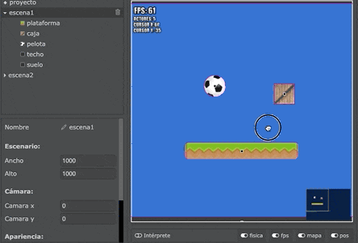

Si bien el juego tendrá un tamaño fijo en la pantalla, pilas incorpora una cámara que nos permite realizar desplazamientos para mostrar otras partes de la escena.
En esta sección vamos a controlar cámara de la escena tanto desde el editor como desde el juego en ejecución.
Para desplazar la cámara simplemente tenemos que pulsar y arrastrar con el mouse sobre el fondo de la escena:

Vas a notar que en la escena el movimiento de la cámara se refleja en los atributos “Cámara x” y “Cámara Y”.
Esos dos atributos también se utilizan para definir la posición inicial de la cámara cuando comienza a ejecutarse el juego.
También vas a observar otros dos atributos llamados “Ancho” y “Alto”. Estos dos atributos van a definir el tamaño total del escenario. Podes cambiar esos parámetros para hacer que el escenario total sea más grande o más chico.
Para mover la cámara podemos acceder a los atributos de posición directamente, por ejemplo si quieres mover constantemente la cámara hacia la derecha, podrías escribir este código en la escena:
O bien, si quieres que un actor se mueva libremente por el escenario y la cámara la siga todo el tiempo podrías usar el método seguir_al_actor así:
Ten en cuenta que esta función se tiene que llamar todo el tiempo, por eso la tenemos que incluir dentro del método actualizar.
También ten en cuenta que la función lleva 3 parámetros:
actor: el actor que la cámara tiene que seguir.suavidad: tiene que ser un número indicando cuán gradual tiene que ser el movimiento de la cámara, cuanto menor sea el número mas rápido y brusco será el movimiento de la cámara.ignorar_bordes: el último parámetro tiene que ser true o false. Si se envía true la cámara seguirá al actor incluso si sale del area del escenario, esto es ideal para juegos con area de movimiento infinita. Si se coloca false la cámara se detendrá en los bordes del escenario.